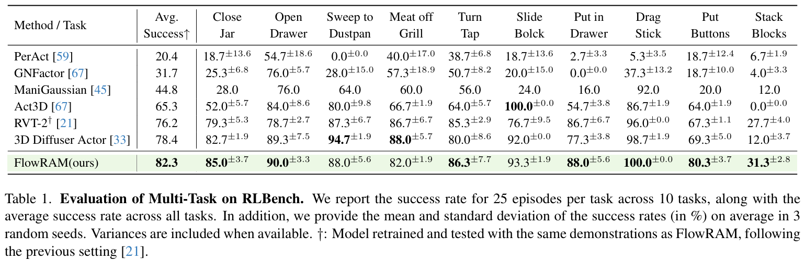

Robotic manipulation in high-precision tasks is essential for numerous industrial and real-world applications where accuracy and speed are required. Yet current diffusion-based policy learning methods generally suffer from low computational efficiency due to the iterative denoising process during inference. Moreover, these methods do not fully explore the potential of generative models for enhancing information exploration in 3D environments. In response, we propose FlowRAM, a novel framework that leverages generative models to achieve region-aware perception, enabling efficient multimodal information processing. Specifically, we devise a Dynamic Radius Schedule, which allows adaptive perception, facilitating transitions from global scene comprehension to fine-grained geometric details. Furthermore, we integrate state space models to integrate multimodal information, while preserving linear computational complexity. In addition, we employ conditional flow matching to learn action poses by regressing deterministic vector fields, simplifying the learning process while maintaining performance.
We verify the effectiveness of the FlowRAM in the RLBench, an established manipulation benchmark, and achieve state-of-the-art performance. The results demonstrate that FlowRAM achieves a remarkable improvement, particularly in high-precision tasks, where it outperforms previous methods by 12.0\% in average success rate. Additionally, FlowRAM is able to generate physically plausible actions for a variety of real-world tasks in less than 4 time steps, significantly increasing inference speed.
FlowRAM is a Mamba-based framework, where multimodal Mamba processes multi-view RGB images, geometric information, instructions, and robot proprioception. In flow matching, noise-perturbed actions are transported to target actions guided by observations. During training, a dynamic radius schedule adjusts the perception radius over random discrete time steps, enabling the model to capture regions of varying sizes and adapt to diverse manipulation tasks by extracting comprehensive semantic and geometric features.
We validate our approach on real-world robotic manipulation tasks using a 6-DoF UR5 arm equipped with a Robotiq gripper.

@inproceedings{wang2025flowram,
title={FlowRAM: Grounding Flow Matching Policy with Region-Aware Mamba Framework for Robotic Manipulation},
author={Wang, Sen and Wang, Le and Zhou, Sanping and Tian, Jingyi and Li, Jiayi and Sun, Haowen and Tang, Wei},
booktitle={Proceedings of the Computer Vision and Pattern Recognition Conference},
pages={12176--12186},
year={2025}
}